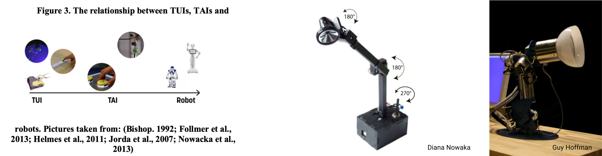
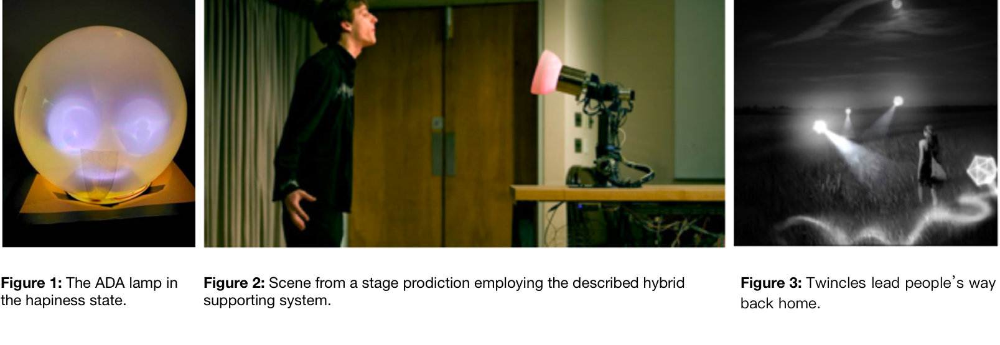
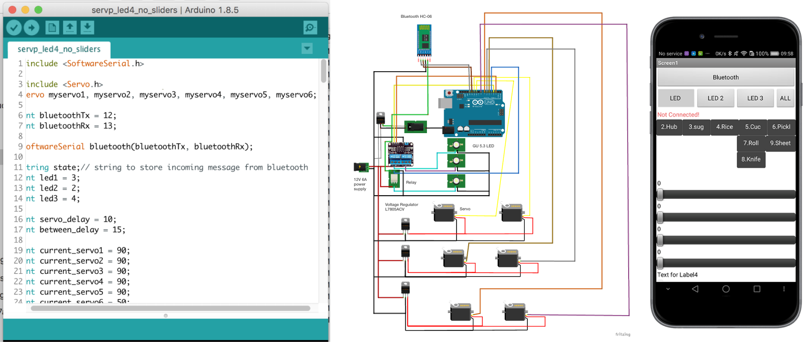
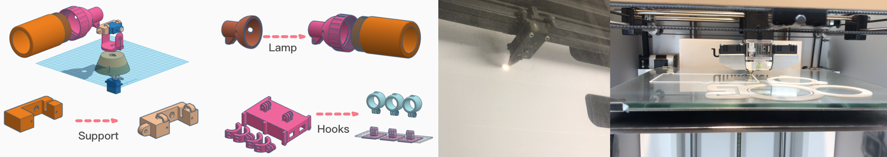

Qin.W
54wangqin1995@gmail.com
54wangqin1995@gmail.com
// Master thesis - 3 months
// Tangible interface
Full paper on research gate
Three smart wall lights that instruct or follow people doing sequential tasks (making Sushi in the study) to explore what aspects make people feel the object be smart, specifically when they’re actively instructed or passively followed.
The concept sit in the specturen from TUI (tangible user interface) first introduced by Hiroshi Ishii and Brygg Ullmer, TAI (tangible autonomous interface) to robot.
Inspried by the research finding from Diana Nowacka's work of a greeting lamp and Guy Hoffman's work about a music companion robot that smart objects don't need complex AI techonology but display some humanoid behaviour to form a bond with people. I decide to dig out whether peole feel the object smarter when they're passively followed or activaly guided
there are researchers believes it is more beneficial to evaluate autonomy perception in targeting population [16] or specified scenarios [17]. So the experiment happens in a kitchen setting with a real task sushi making.
Autonomous lights have been widely developed to assist various fields. Researchers started to look into its function beyond luminaire. Honghao designed a flying light(figure3) to improve urban safety. The light escorts people on their way back home by following their movement, which avoids the problem of privacy invasion in comparison to surveillance camera [19]. An anthropomorphic lamp is capable of conveying emotion (fugure1) [20] through the variation of colours and brightness. Hung-Yu Tseng proposed a light embedded in a navigation system to guide people while they are riding scooters [21] while Yuichiro uses lights to divide indoor spaces. Meanwhile, Hoffman [22] and Diana [2] paid attention to exploiting the spatial movement of lamps to achieve anthropomorphism (figure 1). The later extends lights’ function to behaviour changing and socialising. Adding autonomy to lights (TAIs) could further expand lights’ capability out of illumination. It not only lessens the cognitive workload from the human side by shifting them to machines but makes people feel more connected to everyday objects [2]. This was discovered in a study in which an autonomous desk lamp is generally perceived “displaying a social behaviour through functional movement”.
I use the android phone navigate the lights remotely to simulate the smart movement
The three lights consisted of three 12v GU5.3 LED light bulbs, six normal-size servos, one Arduino Uno board, two relays, fourvoltage regulators, one Bluetooth chip and a 12v 6A power supply (figure 7).
3D Printing, Laser Cut



Ask questions to rate smart level of the light they've interacted with
Participants tend to judge the lights’ autonomy based on its adaptability. “It adjusts itself based on human’s movement.” (Follow) “I pick my material in each step, and it just pointed at the bowl. So I tried to interact with the lights, I grabbed those cucumbers and put them back to see whether it can respond.” (Follow) “For example, I was putting the ingredients, but I forgot about the carrot, if it’s not about the light, I could totally forget about it.” (Guide)
4/20 participants from both groups do not recognise it as a smart object because it does not take the full workload of the task. Instead, it just either assist people to complete tasks (guide) or passively follow users’ movement (follow)rather than presenting a result directly to users. “I did not have to do anything to control them. But I guess since they were following me they are not completely autonomous.” (follow) “5. Don’t think it’s smart, it is just sensing where I am. Maybe it’s smarter if it just tells me what to do.” (follow) “I think if it’s smart, it should make sushi and deliver it to me.” (Guide) “It is smart because It waited for me to complete the current steps and then move to the next step.” (guide)
Five participants from the following group suggested that, since sometimes their attention is not always focused on where they are, it would be better if the lights could follow their eye gaze rather than where they are. Or it can also follow both next step and the current step. “I prefer one light would follow my gaze, the other one is the current where i’m working on.” (follow) “Sometimes I don’t want the lamp focus on my hand, if I put paper recipe by the wall, I would prefer to look at it. So it’s better if it points at somewhere I want to look at instead of tracking my hand movement.” (follow)
According to six participants’ feedbacks, there are two steps that contain too many information so that the lighting instruction was not enough to let them understand what to do. For instance, the first step, where the light point at three seasonings all together and move to the pan to indicate that users should mix them in the pan. This might be improved by pointing at on one type of seasoning each time and move to the pan multiple time accordingly. “you know probably the last step is a bit flat when you have to do the rolling. “ “There were three ingredients needed to be mixed. However it lightens all of them together. I didn’t know it means to mix them. If I was told like the first one ingredient, the second ingredient, that would give me a hint about what to do next.”
Even though most participants think the cues given by lights were simple and clear, three of them still pointed out that it takes a moment for them to understand the lights. For instance, flash once means “take the ingredient”. Most participants think they are easy to understand. However, as I observed, it took them a while to understand those cues (figure 14). one participant even stopped following the lighting instruction after the first moment she got stuck “I was confused in the beginning, it took me a while to figure out it means the next step I should go to.” “ .... Because you put the rice on and then you roll it, and then you crafted, so you go three steps in one station. ”
The study does not intend to propose a solid solution to a definite scenario but to inspire more ideas about how to design and implement the autonomous interface. Another contribution of the thesis is the functional Arduino prototype along with an Android App that can remotely control the movement and switch of the lights through Bluetooth. The technical and fabricating details had been illustrated in the thesis and appendix. Hence, the features can be easily recreated, which enables the prototype to be altered and adapted to a wider range of scenarios.